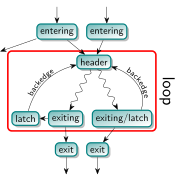
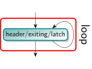
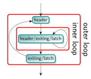
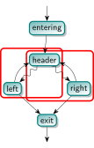
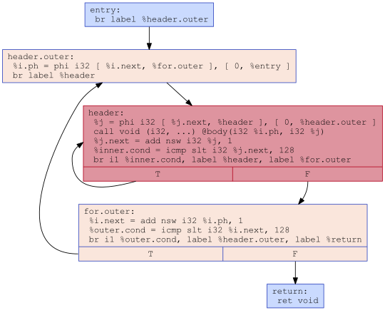
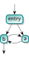
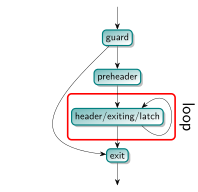
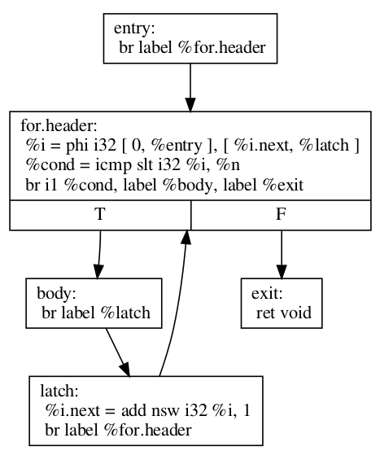
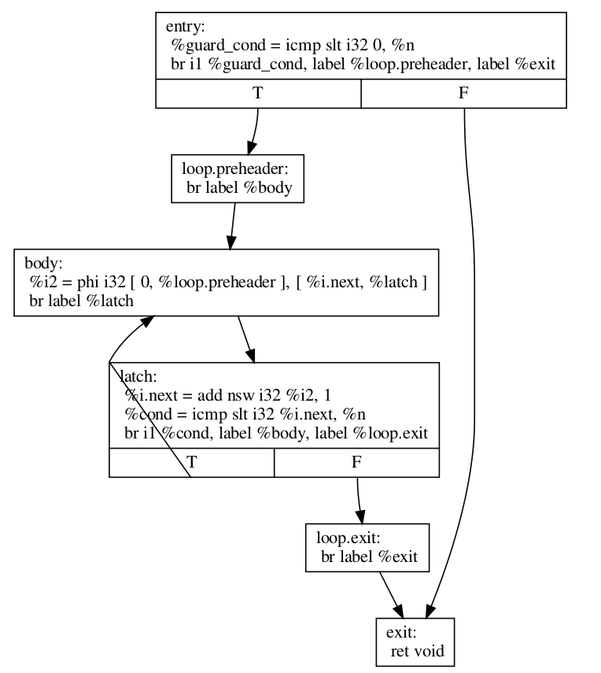

LLVM Loop Terminology (and Canonical Forms)#
Loop Definition#
Loops are an important concept for a code optimizer. In LLVM, detection of loops in a control-flow graph is done by LoopInfo. It is based on the following definition.
A loop is a subset of nodes from the control-flow graph (CFG; where nodes represent basic blocks) with the following properties:
The induced subgraph (which is the subgraph that contains all the edges from the CFG within the loop) is strongly connected (every node is reachable from all others).
All edges from outside the subset into the subset point to the same node, called the header. As a consequence, the header dominates all nodes in the loop (i.e. every execution path to any of the loop’s node will have to pass through the header).
The loop is the maximum subset with these properties. That is, no additional nodes from the CFG can be added such that the induced subgraph would still be strongly connected and the header would remain the same.
In computer science literature, this is often called a natural loop. In LLVM, a more generalized definition is called a cycle.
Terminology#
The definition of a loop comes with some additional terminology:
An entering block (or loop predecessor) is a non-loop node that has an edge into the loop (necessarily the header). If there is only one entering block, and its only edge is to the header, it is also called the loop’s preheader. The preheader dominates the loop without itself being part of the loop.
A latch is a loop node that has an edge to the header.
A backedge is an edge from a latch to the header.
An exiting edge is an edge from inside the loop to a node outside of the loop. The source of such an edge is called an exiting block, its target is an exit block.
{kind=link}

Important Notes#
This loop definition has some noteworthy consequences:
A node can be the header of at most one loop. As such, a loop can be identified by its header. Due to the header being the only entry into a loop, it can be called a Single-Entry-Multiple-Exits (SEME) region.
For basic blocks that are not reachable from the function’s entry, the concept of loops is undefined. This follows from the concept of dominance being undefined as well.
The smallest loop consists of a single basic block that branches to itself. In this case that block is the header, latch (and exiting block if it has another edge to a different block) at the same time. A single block that has no branch to itself is not considered a loop, even though it is trivially strongly connected.
{kind=link}

In this case, the role of header, exiting block and latch fall to the same node. LoopInfo reports this as:
$ opt input.ll -passes='print<loops>'
Loop at depth 1 containing: %for.body<header><latch><exiting>
Loops can be nested inside each other. That is, a loop’s node set can be a subset of another loop with a different loop header. The loop hierarchy in a function forms a forest: Each top-level loop is the root of the tree of the loops nested inside it.
{kind=link}

It is not possible that two loops share only a few of their nodes. Two loops are either disjoint or one is nested inside the other. In the example below the left and right subsets both violate the maximality condition. Only the merge of both sets is considered a loop.
{kind=link}

It is also possible that two logical loops share a header, but are considered a single loop by LLVM:
for (int i = 0; i < 128; ++i)
for (int j = 0; j < 128; ++j)
body(i,j);
which might be represented in LLVM-IR as follows. Note that there is only a single header and hence just a single loop.

The LoopSimplify pass will detect the loop and ensure separate headers for the outer and inner loop.
{kind=link}

A cycle in the CFG does not imply there is a loop. The example below shows such a CFG, where there is no header node that dominates all other nodes in the cycle. This is called irreducible control-flow.
{kind=link}

The term reducible results from the ability to collapse the CFG into a single node by successively replacing one of three base structures with a single node: A sequential execution of basic blocks, acyclic conditional branches (or switches), and a basic block looping on itself. Wikipedia has a more formal definition, which basically says that every cycle has a dominating header.
Irreducible control-flow can occur at any level of the loop nesting. That is, a loop that itself does not contain any loops can still have cyclic control flow in its body; a loop that is not nested inside another loop can still be part of an outer cycle; and there can be additional cycles between any two loops where one is contained in the other. However, an LLVM cycle covers both, loops and irreducible control flow.
The FixIrreducible pass can transform irreducible control flow into loops by inserting new loop headers. It is not included in any default optimization pass pipeline, but is required for some back-end targets.
Exiting edges are not the only way to break out of a loop. Other possibilities are unreachable terminators, [[noreturn]] functions, exceptions, signals, and your computer’s power button.
A basic block « inside » the loop that does not have a path back to the loop (i.e. to a latch or header) is not considered part of the loop. This is illustrated by the following code.
for (unsigned i = 0; i <= n; ++i) {
if (c1) {
// When reaching this block, we will have exited the loop.
do_something();
break;
}
if (c2) {
// abort(), never returns, so we have exited the loop.
abort();
}
if (c3) {
// The unreachable allows the compiler to assume that this will not rejoin the loop.
do_something();
__builtin_unreachable();
}
if (c4) {
// This statically infinite loop is not nested because control-flow will not continue with the for-loop.
while(true) {
do_something();
}
}
}
There is no requirement for the control flow to eventually leave the loop, i.e. a loop can be infinite. A statically infinite loop is a loop that has no exiting edges. A dynamically infinite loop has exiting edges, but it is possible to be never taken. This may happen only under some circumstances, such as when n == UINT_MAX in the code below.
for (unsigned i = 0; i <= n; ++i)
body(i);
It is possible for the optimizer to turn a dynamically infinite loop into a statically infinite loop, for instance when it can prove that the exiting condition is always false. Because the exiting edge is never taken, the optimizer can change the conditional branch into an unconditional one.
If a is loop is annotated with llvm.loop.mustprogress metadata, the compiler is allowed to assume that it will eventually terminate, even if it cannot prove it. For instance, it may remove a mustprogress-loop that does not have any side-effect in its body even though the program could be stuck in that loop forever. Languages such as C and C++ have such forward-progress guarantees for some loops. Also see the mustprogress and willreturn function attributes, as well as the older llvm.sideeffect intrinsic.
The number of executions of the loop header before leaving the loop is the loop trip count (or iteration count). If the loop should not be executed at all, a loop guard must skip the entire loop:
{kind=link}

Since the first thing a loop header might do is to check whether there is another execution and if not, immediately exit without doing any work (also see Rotated Loops), loop trip count is not the best measure of a loop’s number of iterations. For instance, the number of header executions of the code below for a non-positive n (before loop rotation) is 1, even though the loop body is not executed at all.
for (int i = 0; i < n; ++i)
body(i);
A better measure is the backedge-taken count, which is the number of times any of the backedges is taken before the loop. It is one less than the trip count for executions that enter the header.
LoopInfo#
LoopInfo is the core analysis for obtaining information about loops. There are few key implications of the definitions given above which are important for working successfully with this interface.
LoopInfo does not contain information about non-loop cycles. As a result, it is not suitable for any algorithm which requires complete cycle detection for correctness.
LoopInfo provides an interface for enumerating all top level loops (e.g. those not contained in any other loop). From there, you may walk the tree of sub-loops rooted in that top level loop.
Loops which become statically unreachable during optimization must be removed from LoopInfo. If this can not be done for some reason, then the optimization is required to preserve the static reachability of the loop.
Loop Simplify Form#
The Loop Simplify Form is a canonical form that makes several analyses and transformations simpler and more effective. It is ensured by the LoopSimplify (-loop-simplify) pass and is automatically added by the pass managers when scheduling a LoopPass. This pass is implemented in LoopSimplify.h. When it is successful, the loop has:
A preheader.
A single backedge (which implies that there is a single latch).
Dedicated exits. That is, no exit block for the loop has a predecessor that is outside the loop. This implies that all exit blocks are dominated by the loop header.
Loop Closed SSA (LCSSA)#
A program is in Loop Closed SSA Form if it is in SSA form and all values that are defined in a loop are used only inside this loop.
Programs written in LLVM IR are always in SSA form but not necessarily in LCSSA. To achieve the latter, for each value that is live across the loop boundary, single entry PHI nodes are inserted to each of the exit blocks [1] in order to « close » these values inside the loop. In particular, consider the following loop:
c = ...;
for (...) {
if (c)
X1 = ...
else
X2 = ...
X3 = phi(X1, X2); // X3 defined
}
... = X3 + 4; // X3 used, i.e. live
// outside the loop
In the inner loop, the X3 is defined inside the loop, but used outside of it. In Loop Closed SSA form, this would be represented as follows:
c = ...;
for (...) {
if (c)
X1 = ...
else
X2 = ...
X3 = phi(X1, X2);
}
X4 = phi(X3);
... = X4 + 4;
This is still valid LLVM; the extra phi nodes are purely redundant, but all LoopPass’es are required to preserve them. This form is ensured by the LCSSA (-lcssa) pass and is added automatically by the LoopPassManager when scheduling a LoopPass. After the loop optimizations are done, these extra phi nodes will be deleted by -instcombine.
Note that an exit block is outside of a loop, so how can such a phi « close » the value inside the loop since it uses it outside of it ? First of all, for phi nodes, as mentioned in the LangRef: « the use of each incoming value is deemed to occur on the edge from the corresponding predecessor block to the current block ». Now, an edge to an exit block is considered outside of the loop because if we take that edge, it leads us clearly out of the loop.
However, an edge doesn’t actually contain any IR, so in source code, we have to choose a convention of whether the use happens in the current block or in the respective predecessor. For LCSSA’s purpose, we consider the use happens in the latter (so as to consider the use inside) [2].
The major benefit of LCSSA is that it makes many other loop optimizations simpler.
First of all, a simple observation is that if one needs to see all the outside users, they can just iterate over all the (loop closing) PHI nodes in the exit blocks (the alternative would be to scan the def-use chain [3] of all instructions in the loop).
Then, consider for example simple-loop-unswitch ing the loop above. Because it is in LCSSA form, we know that any value defined inside of the loop will be used either only inside the loop or in a loop closing PHI node. In this case, the only loop closing PHI node is X4. This means that we can just copy the loop and change the X4 accordingly, like so:
c = ...;
if (c) {
for (...) {
if (true)
X1 = ...
else
X2 = ...
X3 = phi(X1, X2);
}
} else {
for (...) {
if (false)
X1' = ...
else
X2' = ...
X3' = phi(X1', X2');
}
}
X4 = phi(X3, X3')
Now, all uses of X4 will get the updated value (in general, if a loop is in LCSSA form, in any loop transformation, we only need to update the loop closing PHI nodes for the changes to take effect). If we did not have Loop Closed SSA form, it means that X3 could possibly be used outside the loop. So, we would have to introduce the X4 (which is the new X3) and replace all uses of X3 with that. However, we should note that because LLVM keeps a def-use chain [3] for each Value, we wouldn’t need to perform data-flow analysis to find and replace all the uses (there is even a utility function, replaceAllUsesWith(), that performs this transformation by iterating the def-use chain).
Another important advantage is that the behavior of all uses of an induction variable is the same. Without this, you need to distinguish the case when the variable is used outside of the loop it is defined in, for example:
for (i = 0; i < 100; i++) {
for (j = 0; j < 100; j++) {
k = i + j;
use(k); // use 1
}
use(k); // use 2
}
Looking from the outer loop with the normal SSA form, the first use of k is not well-behaved, while the second one is an induction variable with base 100 and step 1. Although, in practice, and in the LLVM context, such cases can be handled effectively by SCEV. Scalar Evolution (scalar-evolution) or SCEV, is a (analysis) pass that analyzes and categorizes the evolution of scalar expressions in loops.
In general, it’s easier to use SCEV in loops that are in LCSSA form. The evolution of a scalar (loop-variant) expression that SCEV can analyze is, by definition, relative to a loop. An expression is represented in LLVM by an llvm::Instruction. If the expression is inside two (or more) loops (which can only happen if the loops are nested, like in the example above) and you want to get an analysis of its evolution (from SCEV), you have to also specify relative to what Loop you want it. Specifically, you have to use getSCEVAtScope().
However, if all loops are in LCSSA form, each expression is actually represented by two different llvm::Instructions. One inside the loop and one outside, which is the loop-closing PHI node and represents the value of the expression after the last iteration (effectively, we break each loop-variant expression into two expressions and so, every expression is at most in one loop). You can now just use getSCEV(). and which of these two llvm::Instructions you pass to it disambiguates the context / scope / relative loop.
« More Canonical » Loops#
Rotated Loops#
Loops are rotated by the LoopRotate (loop-rotate) pass, which converts loops into do/while style loops and is implemented in LoopRotation.h. Example:
void test(int n) {
for (int i = 0; i < n; i += 1)
// Loop body
}
is transformed to:
void test(int n) {
int i = 0;
do {
// Loop body
i += 1;
} while (i < n);
}
Warning: This transformation is valid only if the compiler can prove that the loop body will be executed at least once. Otherwise, it has to insert a guard which will test it at runtime. In the example above, that would be:
void test(int n) {
int i = 0;
if (n > 0) {
do {
// Loop body
i += 1;
} while (i < n);
}
}
It’s important to understand the effect of loop rotation at the LLVM IR level. We follow with the previous examples in LLVM IR while also providing a graphical representation of the control-flow graphs (CFG). You can get the same graphical results by utilizing the view-cfg pass.
The initial for loop could be translated to:
define void @test(i32 %n) {
entry:
br label %for.header
for.header:
%i = phi i32 [ 0, %entry ], [ %i.next, %latch ]
%cond = icmp slt i32 %i, %n
br i1 %cond, label %body, label %exit
body:
; Loop body
br label %latch
latch:
%i.next = add nsw i32 %i, 1
br label %for.header
exit:
ret void
}
{kind=link}

Before we explain how LoopRotate will actually transform this loop, here’s how we could convert it (by hand) to a do-while style loop.
define void @test(i32 %n) {
entry:
br label %body
body:
%i = phi i32 [ 0, %entry ], [ %i.next, %latch ]
; Loop body
br label %latch
latch:
%i.next = add nsw i32 %i, 1
%cond = icmp slt i32 %i.next, %n
br i1 %cond, label %body, label %exit
exit:
ret void
}

Note two things:
The condition check was moved to the « bottom » of the loop, i.e. the latch. This is something that LoopRotate does by copying the header of the loop to the latch.
The compiler in this case can’t deduce that the loop will definitely execute at least once so the above transformation is not valid. As mentioned above, a guard has to be inserted, which is something that LoopRotate will do.
This is how LoopRotate transforms this loop:
define void @test(i32 %n) {
entry:
%guard_cond = icmp slt i32 0, %n
br i1 %guard_cond, label %loop.preheader, label %exit
loop.preheader:
br label %body
body:
%i2 = phi i32 [ 0, %loop.preheader ], [ %i.next, %latch ]
br label %latch
latch:
%i.next = add nsw i32 %i2, 1
%cond = icmp slt i32 %i.next, %n
br i1 %cond, label %body, label %loop.exit
loop.exit:
br label %exit
exit:
ret void
}
{kind=link}

The result is a little bit more complicated than we may expect because LoopRotate ensures that the loop is in Loop Simplify Form after rotation. In this case, it inserted the %loop.preheader basic block so that the loop has a preheader and it introduced the %loop.exit basic block so that the loop has dedicated exits (otherwise, %exit would be jumped from both %latch and %entry, but %entry is not contained in the loop). Note that a loop has to be in Loop Simplify Form beforehand too for LoopRotate to be applied successfully.
The main advantage of this form is that it allows hoisting invariant instructions, especially loads, into the preheader. That could be done in non-rotated loops as well but with some disadvantages. Let’s illustrate them with an example:
for (int i = 0; i < n; ++i) {
auto v = *p;
use(v);
}
We assume that loading from p is invariant and use(v) is some statement that uses v. If we wanted to execute the load only once we could move it « out » of the loop body, resulting in this:
auto v = *p;
for (int i = 0; i < n; ++i) {
use(v);
}
However, now, in the case that n <= 0, in the initial form, the loop body would never execute, and so, the load would never execute. This is a problem mainly for semantic reasons. Consider the case in which n <= 0 and loading from p is invalid. In the initial program there would be no error. However, with this transformation we would introduce one, effectively breaking the initial semantics.
To avoid both of these problems, we can insert a guard:
if (n > 0) { // loop guard
auto v = *p;
for (int i = 0; i < n; ++i) {
use(v);
}
}
This is certainly better but it could be improved slightly. Notice that the check for whether n is bigger than 0 is executed twice (and n does not change in between). Once when we check the guard condition and once in the first execution of the loop. To avoid that, we could do an unconditional first execution and insert the loop condition in the end. This effectively means transforming the loop into a do-while loop:
if (0 < n) {
auto v = *p;
do {
use(v);
++i;
} while (i < n);
}
Note that LoopRotate does not generally do such hoisting. Rather, it is an enabling transformation for other passes like Loop-Invariant Code Motion (-licm).